PageFix – manual de utilizare
Acest manual îți arată, pas cu pas, cum să lucrezi cu PageFix. Nu ai nevoie de cunoștințe tehnice: fiecare operație este explicată pe rând, cu imagini din aplicație.
Apasă butonul din bara de sus a aplicației sau tasta F1. Manualul se deschide într-o filă nouă a browserului, iar aplicația, cu documentul la care lucrezi, rămâne deschisă în fila ei. Ca să revii, dă click pe fila PageFix (sau închide fila manualului).
1.Ce este PageFix
PageFix este o aplicație pentru aranjarea documentelor PDF. Se deschide în browser (programul cu care navighezi pe internet, de exemplu Google Chrome, Microsoft Edge sau Mozilla Firefox), deci nu trebuie instalată pe calculator.
Cu PageFix poți:
- combina mai multe fișiere PDF (și imagini) într-un singur document;
- roti paginile culcate sau întoarse invers;
- muta paginile în altă ordine, șterge paginile în plus sau dubla o pagină;
- insera pagini albe, pagini din alt PDF sau fotografii;
- extrage câteva pagini într-un fișier separat sau împărți un document mare în mai multe fișiere;
- intercala paginile de față și de verso scanate separat;
- decupa marginile albe sau încadra paginile într-un format (de exemplu A4);
- adăuga numere de pagină, antet / subsol, watermark (de exemplu „CONFIDENȚIAL”) sau o imagine (logo, ștampilă).
Toate operațiile se fac direct în browser. Documentele nu sunt trimise pe internet sau către vreun server, deci poți lucra liniștit și cu acte confidențiale.
PageFix lucrează pe o copie. Fișierul de pe calculator rămâne exact cum era. Rezultatul îl obții la final, ca fișier nou, cu butonul Descarcă PDF (vezi capitolul Salvarea rezultatului).
2.Primii pași
Deschiderea aplicației
Deschide browserul și scrie adresa aplicației primită de la departamentul IT (sau dă click pe scurtătura pregătită pentru tine). La pornire, PageFix arată un ecran aproape gol, care te invită să alegi un fișier:
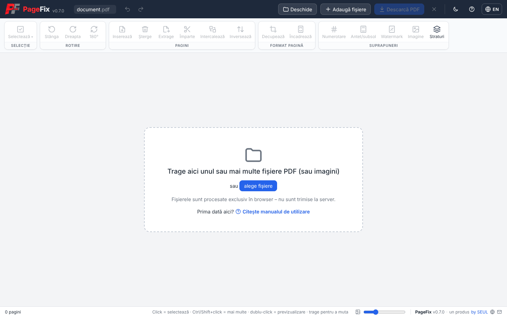
Deschiderea primului document – trei variante
Alege varianta care ți se pare cea mai comodă. Rezultatul este același.
Varianta A – cu butonul „alege fișiere”
- Apasă butonul albastru alege fișiere din mijlocul ecranului (sau butonul Deschide din bara de sus).
- Se deschide fereastra obișnuită a calculatorului pentru alegerea fișierelor. Mergi în folderul unde se află documentul (de exemplu Documente sau Descărcări).
- Dă click pe fișier, apoi apasă Deschidere (sau Open).
În fereastra de alegere, ține apăsată tasta Ctrl și dă click pe fiecare fișier dorit. Toate vor fi puse unul după altul într-un singur document.
Varianta B – prin tragere („drag & drop”)
- Deschide folderul cu documente (de exemplu cu File Explorer pe Windows sau Finder pe Mac), astfel încât să vezi atât folderul, cât și browserul.
- Apasă cu mouse-ul pe fișier și ține apăsat.
- Trage fișierul peste fereastra PageFix și dă drumul butonului mouse-ului. Cât timp tragi fișierul deasupra ferestrei, zona de lucru este evidențiată cu un chenar albastru.
Varianta C – imagini
Poți deschide și fotografii sau imagini (JPG, PNG, WEBP, GIF și altele). Fiecare imagine devine automat o pagină A4, cu imaginea centrată. Așa poți face rapid un PDF din pozele unor documente făcute cu telefonul.
După deschidere, fiecare pagină a documentului apare ca o miniatură (o imagine mică a paginii). Mai departe, totul se face cu un click pe aceste miniaturi și pe butoanele de deasupra.
↑ Înapoi sus3.Cum arată ecranul
Cu un document deschis, ecranul are cinci zone. Numerele roșii din imagine corespund explicațiilor de mai jos.
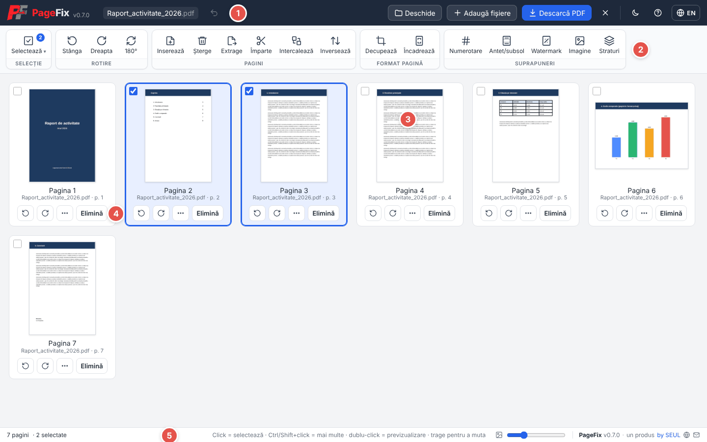
- 1Bara de sus – numele documentului, butoanele de anulare / refacere, deschiderea și adăugarea de fișiere, descărcarea rezultatului, tema, manualul și limba.
- 2Panglica de instrumente – toate operațiile, grupate pe teme: Selecție, Rotire, Pagini, Format pagină, Suprapuneri.
- 3Zona paginilor – câte o miniatură pentru fiecare pagină, în ordinea din document.
- 4Butoanele fiecărei pagini – acțiuni rapide doar pentru pagina respectivă.
- 5Bara de stare – câte pagini are documentul, câte sunt selectate, sfaturi scurte și glisorul pentru mărimea miniaturilor.
3.1. Bara de sus
| Element | Ce face |
|---|---|
| PageFix v0.7.0 (sigla) | Click pe ea deschide fereastra „Despre” (versiune, autor, contact). |
| Numele documentului | Numele cu care se va descărca fișierul. Dă click pe el ca să-l schimbi (vezi Salvarea rezultatului). |
| și | Anulează ultima operație, respectiv o reface. Vezi Anularea greșelilor. |
| Deschide | Deschide alt document în locul celui curent. |
| Adaugă fișiere | Adaugă alte PDF-uri sau imagini la finalul documentului curent (combinare). |
| Descarcă PDF | Creează fișierul rezultat și îl salvează pe calculator. |
| Închide documentul (fără să-l salveze). | |
| / | Comută între tema luminoasă și cea întunecată. |
| Deschide acest manual de utilizare, într-o filă nouă (la fel ca tasta F1). | |
| EN | Schimbă limba aplicației (română ↔ engleză). |
3.2. Panglica de instrumente
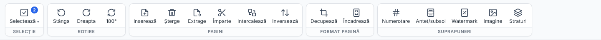
| Grup | Butoane | La ce folosesc |
|---|---|---|
| Selecție | Selectează ▾ | Alegerea rapidă a paginilor: toate, niciuna, pare, impare, un interval. Bulina albastră arată câte pagini sunt selectate. |
| Rotire | Stânga Dreapta 180° | Rotesc paginile selectate. Butoanele apar estompate cât timp nu e selectată nicio pagină. |
| Pagini | Inserează Șterge Extrage Împarte Intercalează Inversează | Adăugarea, ștergerea, salvarea separată, împărțirea și reordonarea paginilor. |
| Format pagină | Decupează Încadrează | Tăierea marginilor și aducerea paginilor la un format standard (A4 etc.). |
| Suprapuneri | Numerotare Antet/subsol Watermark Imagine Straturi | Adăugarea de texte și imagini peste pagini și lista lor. |
După o secundă apare o scurtă explicație a butonului. Funcționează pentru aproape toate butoanele din aplicație.
3.3. Miniatura unei pagini
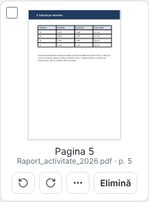
- Căsuța din colțul stânga-sus – bifeaz-o ca să selectezi pagina (sau scoate bifa ca s-o deselectezi).
- „Pagina 5” – poziția paginii în documentul pe care îl construiești.
- Textul mic de dedesubt – de unde provine pagina: numele fișierului și numărul paginii în acel fișier (de exemplu „Raport_activitate_2026.pdf · p. 5”). E util când combini mai multe fișiere.
- și – rotesc doar această pagină, cu 90° spre stânga sau spre dreapta.
- – deschide un meniu cu mai multe acțiuni pentru această pagină (vezi capitolul 8).
- Elimină – scoate pagina din document.
Dacă ții mouse-ul nemișcat peste imaginea paginii, apare mărimea ei în milimetri (de exemplu „210 × 297 mm” pentru o pagină A4).
3.4. Bara de stare (jos)
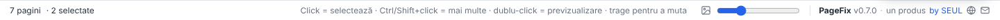
- În stânga: numărul de pagini al documentului și câte pagini sunt selectate.
- La mijloc: un rând cu sfaturi de folosire.
- Glisorul cu iconița schimbă mărimea miniaturilor (vezi capitolul 21).
- În dreapta: versiunea aplicației și datele autorului.
3.5. Mesajele aplicației
După fiecare operație, în colțul din dreapta-jos apare pentru câteva secunde un mesaj scurt, de exemplu „Adăugate 7 pagini.”. Culoarea benzii din stânga mesajului îți spune ce s-a întâmplat:
- verde – operația a reușit;
- galben – un avertisment (de exemplu „Selectează mai întâi una sau mai multe pagini.”);
- roșu – o eroare: operația nu s-a făcut. Citește mesajul, el îți spune ce trebuie corectat.
Când o operație durează mai mult (fișiere mari), ecranul se estompează și apare mesajul „Se lucrează…”. Așteaptă până dispare.
↑ Înapoi sus4.Deschiderea și combinarea fișierelor
Ce fișiere poți folosi
- Documente PDF (extensia
.pdf); - Imagini: JPG / JPEG, PNG, WEBP, GIF, BMP, AVIF. Fiecare imagine devine o pagină A4.
Alte tipuri de fișiere (Word, Excel etc.) sunt ignorate. Dacă alegi doar astfel de fișiere, apare mesajul „Nu am găsit fișiere PDF sau imagini.”.
„Deschide” sau „Adaugă fișiere”?
| Buton | Ce se întâmplă |
|---|---|
| Deschide | Documentul curent se închide și în locul lui apare documentul ales. Dacă ai modificări nedescărcate, aplicația te întreabă mai întâi dacă vrei să continui. |
| Adaugă fișiere | Paginile fișierelor alese se adaugă la finalul documentului curent. Așa combini mai multe documente într-unul singur. |
Combinarea mai multor documente – exemplu
Vrei să faci un singur PDF din „Cerere.pdf”, „Copie buletin.jpg” și „Adeverință.pdf”:
- Apasă Deschide și alege „Cerere.pdf”.
- Apasă Adaugă fișiere și alege „Copie buletin.jpg”.
- Apasă din nou Adaugă fișiere și alege „Adeverință.pdf”.
- Verifică ordinea paginilor; dacă trebuie, mută-le prin tragere (vezi capitolul 8).
- Apasă Descarcă PDF.
Adăugarea prin tragere, la un anumit loc
Dacă tragi un fișier din calculator direct între miniaturi, apare o linie albastră verticală care arată unde vor fi puse paginile noi. Dă drumul mouse-ului când linia e în locul dorit. Dacă tragi fișierul în altă parte a ferestrei, paginile se adaugă la final.
Documente protejate cu parolă
Dacă un PDF are parolă de deschidere, aplicația îți cere parola într-o fereastră mică. Scrie parola și apasă OK. Dacă parola e greșită, ți se cere din nou. Dacă apeși Anulează, fișierul nu se deschide.
Unele PDF-uri au restricții de modificare (de exemplu, unele documente emise de instituții). Le poți vedea, dar aplicația afișează avertismentul „… este criptat. Vizualizarea merge, dar paginile salvate pot ieși goale sau corupte.”. Verifică întotdeauna rezultatul descărcat. Dacă iese greșit, cere emitentului o versiune fără restricții.
5.Selectarea paginilor
Multe operații (rotire, decupare, ștergere…) se aplică paginilor selectate. O pagină selectată are chenar albastru și bifă în căsuța din colț. În bara de stare vezi câte pagini sunt selectate.
Cu mouse-ul
| Ce faci | Rezultat |
|---|---|
| Click pe o pagină | Se selectează doar acea pagină (celelalte se deselectează). |
| Ctrl + click pe o pagină | Pagina se adaugă la selecție sau, dacă era deja selectată, se scoate din selecție. |
| Shift + click pe o pagină | Se selectează toate paginile dintre ultima pagină pe care ai dat click și aceasta. Exemplu: click pe pagina 2, apoi Shift + click pe pagina 6 → se selectează paginile 2, 3, 4, 5 și 6. |
| Click pe căsuța din colțul paginii | Bifează / debifează pagina, fără să le afecteze pe celelalte. |
| Click pe spațiul gol dintre pagini | Se anulează selecția. |
Cu meniul „Selectează”
Apasă Selectează ▾ din panglică:
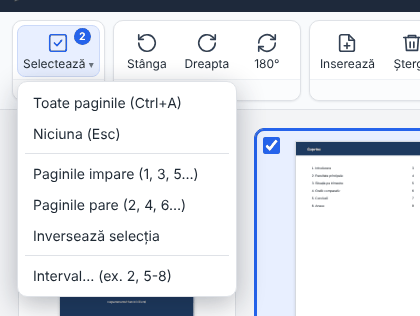
- Toate paginile (sau tastele Ctrl + A);
- Niciuna (sau tasta Esc);
- Paginile impare (1, 3, 5…) și Paginile pare (2, 4, 6…);
- Inversează selecția – selectează paginile neselectate și le deselectează pe celelalte;
- Interval… – scrii numerele paginilor dorite:
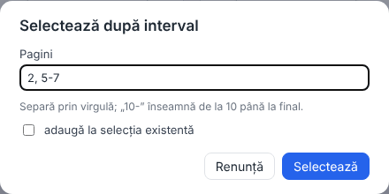
Scrie paginile (vezi capitolul 6) și apasă Selectează. Dacă bifezi „adaugă la selecția existentă”, paginile se adaugă la cele deja selectate.
↑ Înapoi sus6.Cum scrii un interval de pagini
În mai multe ferestre ți se cer „paginile” sub formă de text. Regulile sunt aceleași peste tot:
| Scrii | Înseamnă |
|---|---|
5 | doar pagina 5 |
2, 5, 9 | paginile 2, 5 și 9 (separate prin virgulă) |
5-8 | paginile 5, 6, 7 și 8 |
10- | de la pagina 10 până la ultima pagină |
-3 | de la prima pagină până la pagina 3 |
8-5 | paginile 8, 7, 6 și 5, în această ordine (invers) |
1-3, 7, 10- | poți combina: paginile 1, 2, 3, 7 și de la 10 până la final |
- Numerele se referă la poziția din documentul afișat în PageFix („Pagina 1”, „Pagina 2”… de sub miniaturi), nu la numerele tipărite pe pagini.
- O pagină scrisă de două ori este luată o singură dată.
- Dacă scrii o pagină care nu există, apare un mesaj de felul „Pagina 12 nu există (documentul are 7 pagini).”, iar fereastra rămâne deschisă ca să corectezi.
- Nu lăsa spații în jurul liniuței: scrie
5-8, nu5 - 8.
La Împărțire poți scrie mai multe grupuri, separate prin punct și virgulă (;). Fiecare grup devine un fișier separat. Exemplu: 1-3; 4-10; 11-.
7.Rotirea paginilor
Paginile scanate apar uneori culcate sau cu susul în jos. Le poți îndrepta în două feluri.
O singură pagină
Folosește butoanele de sub miniatură: o rotește 90° spre stânga, 90° spre dreapta. Pentru 180° apasă de două ori sau alege „Rotește 180°” din meniul .
Mai multe pagini deodată
- Selectează paginile (vezi capitolul 5).
- Apasă în panglică Stânga, Dreapta sau 180°.
Dacă nu ai selectat nicio pagină, apare mesajul „Selectează mai întâi una sau mai multe pagini.”.
↑ Înapoi sus8.Schimbarea ordinii paginilor
Mutarea prin tragere
- Apasă pe miniatura paginii și ține butonul mouse-ului apăsat.
- Trage pagina în locul dorit. O linie albastră verticală arată unde va ajunge.
- Dă drumul butonului mouse-ului.
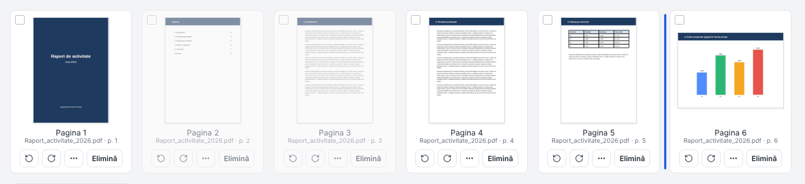
Selectează mai întâi paginile, apoi trage una dintre ele. Toate paginile selectate se mută împreună, în ordinea lor, iar lângă cursor apare „2 pagini”, „3 pagini”…
Inversarea ordinii
Butonul Inversează întoarce ordinea paginilor, ca la scanările făcute de la ultima pagină la prima:
- dacă ai selectat cel puțin două pagini, se inversează doar ordinea lor (rămân pe aceleași poziții, dar în ordine inversă);
- altfel se inversează tot documentul.
Meniul unei pagini
Butonul de sub fiecare miniatură deschide un meniu cu acțiuni pentru acea pagină:
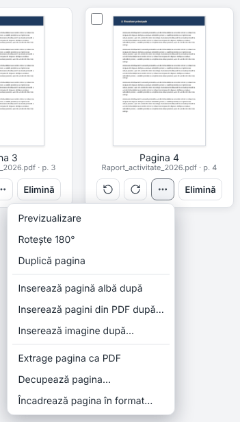
| Opțiune | Ce face |
|---|---|
| Previzualizare | Deschide pagina mare (vezi capitolul 18). |
| Rotește 180° | Întoarce pagina cu susul în jos. |
| Duplică pagina | Pune o copie a paginii imediat după ea. |
| Inserează pagină albă după / pagini din PDF după… / imagine după… | Deschide fereastra de inserare, cu poziția deja completată (după această pagină). Vezi capitolul 10. |
| Extrage pagina ca PDF | Descarcă doar această pagină, ca fișier separat. |
| Decupează pagina… / Încadrează pagina în format… | Deschide fereastra de format, doar pentru această pagină. Vezi capitolele 14 și 15. |
9.Ștergerea paginilor
Rapid
- butonul Elimină de sub o pagină o scoate imediat din document;
- tasta Delete (sau Del) șterge toate paginile selectate.
Cu fereastra „Ștergere pagini”
Apasă Șterge din panglică. Alegi ce se șterge:
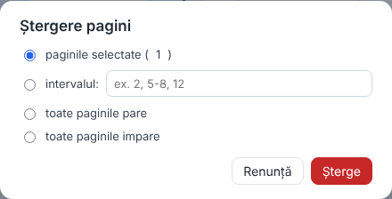
- paginile selectate (între paranteze vezi câte sunt);
- intervalul – scrii paginile (de exemplu
2, 5-8); - toate paginile pare sau toate paginile impare – util, de exemplu, pentru eliminarea versourilor goale dintr-o scanare.
Apasă butonul roșu Șterge. Dacă alegerea ar șterge toate paginile, aplicația îți cere mai întâi confirmarea.
Apasă din bara de sus sau tastele Ctrl + Z. Pagina revine la locul ei.
10.Inserarea de pagini
Butonul Inserează deschide o fereastră cu trei file (taburi): Pagină albă, Pagini din alt PDF și Imagine ca pagină. În partea de jos alegi poziția la care se pun paginile noi.
Poziția
| Opțiune | Paginile noi se pun… |
|---|---|
| după pagina [număr] | imediat după pagina cu numărul scris alături |
| înainte de pagina [număr] | imediat înaintea paginii cu numărul scris alături |
| la început | înaintea primei pagini |
| la final | după ultima pagină |
Implicit, fereastra propune poziția „după” ultima pagină selectată (sau după ultima pagină a documentului, dacă nu e nimic selectat).
Pagini albe
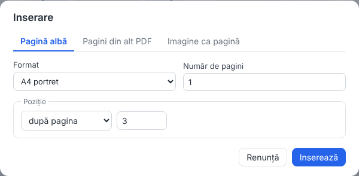
- Rămâi pe fila Pagină albă.
- La Format alege mărimea: „ca pagina de referință” (aceeași mărime ca pagina lângă care inserezi), A4 portret, A4 peisaj, A3, A5 sau Letter.
- La Număr de pagini scrie câte pagini albe vrei (între 1 și 500).
- Alege poziția și apasă Inserează.
Pagini din alt PDF
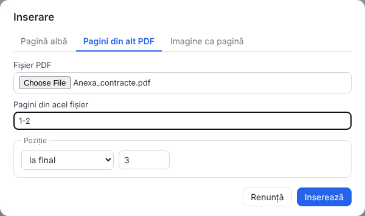
- Treci pe fila Pagini din alt PDF.
- La Fișier PDF apasă butonul de alegere și selectează fișierul.
- La Pagini din acel fișier scrie ce pagini vrei (de exemplu
1-3, 7). Lasă câmpul gol ca să le iei pe toate. - Alege poziția și apasă Inserează.
Imagini ca pagini
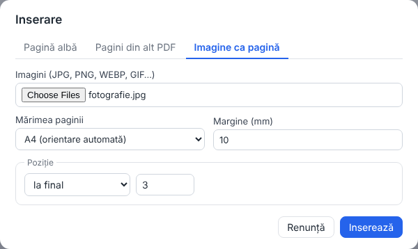
- Treci pe fila Imagine ca pagină.
- Alege una sau mai multe imagini. Fiecare imagine devine o pagină.
- La Mărimea paginii alege:
- A4 (orientare automată) – pagina A4 se întoarce singură în peisaj pentru imaginile late;
- exact cât imaginea – pagina are mărimea imaginii, fără margini;
- ca pagina de referință – aceeași mărime ca pagina lângă care inserezi.
- La Margine (mm) alegi spațiul alb din jurul imaginii (implicit 10 mm).
- Alege poziția și apasă Inserează.
11.Extragerea paginilor într-un PDF nou
Extragerea salvează doar anumite pagini într-un fișier nou. Documentul la care lucrezi rămâne neschimbat (dacă nu alegi altfel).
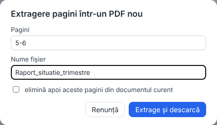
- (Opțional) selectează paginile dorite – fereastra le va completa singură.
- Apasă Extrage din panglică.
- La Pagini verifică sau scrie paginile (de exemplu
5-6). - La Nume fișier scrie numele noului fișier (fără „.pdf”, se adaugă singur).
- Bifează „elimină apoi aceste pagini din documentul curent” doar dacă vrei să le și scoți din document după extragere.
- Apasă Extrage și descarcă. Fișierul se salvează în folderul de descărcări.
Pentru o singură pagină e mai rapid: meniul al paginii → Extrage pagina ca PDF.
Paginile extrase păstrează rotirile, decupările și suprapunerile (numere, antet, watermark…) pe care le-ai făcut.
12.Împărțirea documentului
Împarte transformă documentul în mai multe fișiere PDF, puse toate într-o arhivă ZIP (un singur fișier care le conține pe toate).
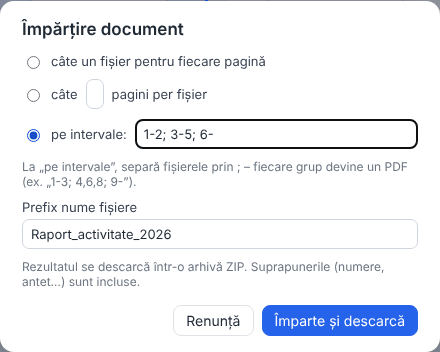
Moduri de împărțire
- câte un fișier pentru fiecare pagină – un document de 10 pagini devine 10 fișiere;
- câte [N] pagini per fișier – de exemplu câte 2: paginile 1-2, 3-4, 5-6…;
- pe intervale – scrii grupurile separate prin
;, de exemplu1-3; 4,6,8; 9-. Fiecare grup devine un fișier.
La Prefix nume fișiere scrii începutul numelui fișierelor. Ele se vor numi, de exemplu, Raport_1_p1-2.pdf, Raport_2_p3-5.pdf… (prefixul, numărul fișierului și paginile conținute). Arhiva se numește Raport_impartit.zip.
Apasă Împarte și descarcă.
Cum deschid arhiva ZIP
- Windows: dă click dreapta pe fișierul ZIP din folderul de descărcări → Extragere totală… (Extract All…) → Extragere. Se creează un folder cu toate fișierele PDF.
- Mac: dă dublu-click pe fișierul ZIP; se creează automat un folder cu fișierele.
13.Intercalarea (scanări față / verso)
Multe imprimante scanează doar pe o parte. Pentru un document tipărit față-verso scanezi întâi toate fețele, apoi întorci teancul și scanezi versourile. Rezultă două fișiere, iar Intercalarea le îmbină în ordinea corectă: față 1, verso 1, față 2, verso 2…
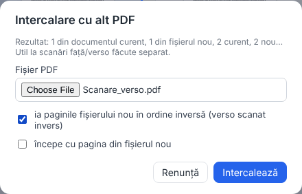
- Deschide fișierul cu fețele (de exemplu „Scanare_fata.pdf”).
- Apasă Intercalează.
- La Fișier PDF alege fișierul cu versourile.
- Dacă ai întors teancul și versourile au ieșit de la ultima la prima (cazul obișnuit), bifează „ia paginile fișierului nou în ordine inversă”.
- Bifează „începe cu pagina din fișierul nou” doar dacă documentul trebuie să înceapă cu o pagină din al doilea fișier.
- Apasă Intercalează și verifică rezultatul în miniaturi.
Fețe: F1, F2, F3. Versouri scanate invers: V3, V2, V1. Cu bifa „ordine inversă”, rezultatul este: F1, V1, F2, V2, F3, V3.
Dacă cele două fișiere au număr diferit de pagini, paginile rămase se pun la final și apare un avertisment.
14.Decuparea marginilor
Decuparea ascunde marginile unei pagini, de exemplu marginile negre sau prea late de la o scanare. Apasă Decupează. Fereastra arată prima pagină selectată (sau prima pagină a documentului).
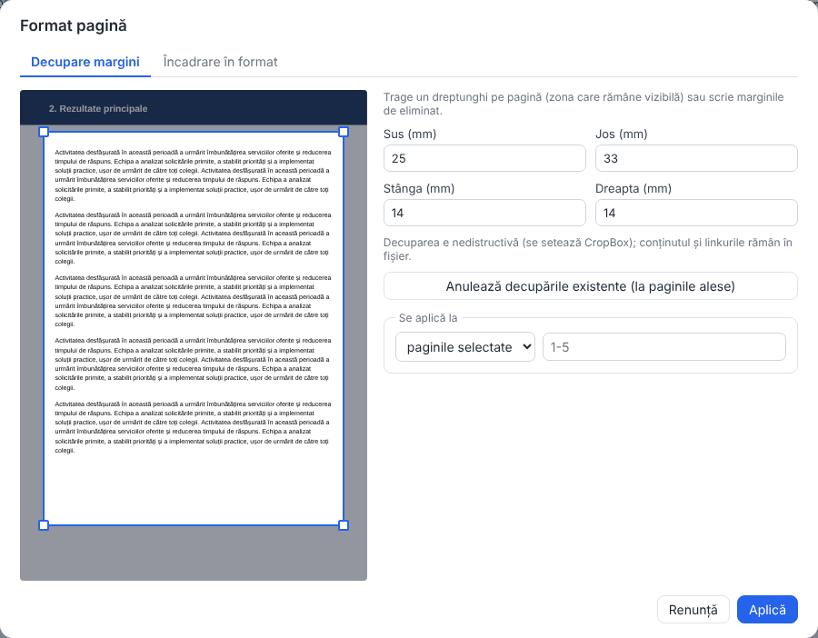
Varianta 1 – desenezi cu mouse-ul
- Pe imaginea paginii, apasă în colțul stânga-sus al zonei pe care vrei s-o păstrezi și trage până în colțul dreapta-jos. Apare un dreptunghi albastru.
- Ajustează dreptunghiul: trage de pătrățelele din colțuri ca să-l mărești sau micșorezi, ori trage din interiorul lui ca să-l muți.
- Câmpurile Sus / Jos / Stânga / Dreapta (mm) se completează automat.
Varianta 2 – scrii marginile
Scrie direct în câmpurile Sus, Jos, Stânga, Dreapta câți milimetri vrei să tai de pe fiecare latură. Dreptunghiul se actualizează pe imagine.
La ce pagini se aplică
În chenarul Se aplică la alegi: paginile selectate, toate paginile sau un interval (scris în câmpul alăturat). Aceleași margini se aplică tuturor paginilor alese. La final apasă Aplică.
Marginile doar se ascund, conținutul rămâne în fișier, iar linkurile continuă să funcționeze. Butonul Anulează decupările existente (la paginile alese) readuce paginile alese la mărimea lor inițială.
- „Toate marginile sunt 0…” – nu ai desenat un dreptunghi și nu ai scris nicio margine.
- „Marginile sunt prea mari pentru pagina…” – din pagină n-ar mai rămâne aproape nimic; micșorează marginile.
15.Încadrarea într-un format
Încadrarea aduce paginile de mărimi diferite la același format (de exemplu A4), ca documentul să se tipărească frumos. Conținutul fiecărei pagini este micșorat sau mărit proporțional și centrat pe pagina nouă.
Apasă Încadrează (sau fila Încadrare în format din fereastra de decupare).
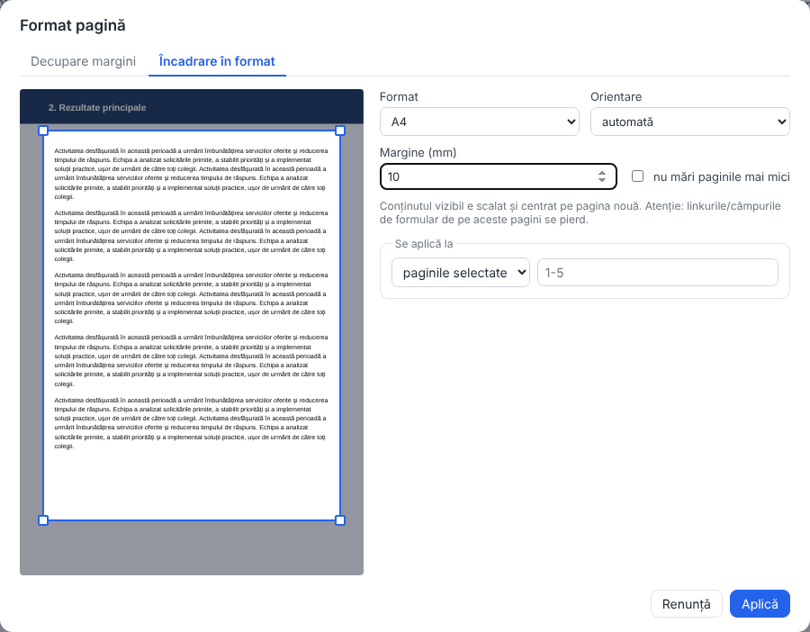
| Câmp | Ce alegi |
|---|---|
| Format | A4, A3, A5, Letter sau Legal. |
| Orientare | automată (peisaj pentru paginile late, portret pentru celelalte), portret (în picioare) sau peisaj (culcat). |
| Margine (mm) | Spațiul alb lăsat pe margini. |
| nu mări paginile mai mici | Bifat: paginile mai mici decât formatul ales rămân la mărimea lor (doar centrate), nu se măresc. |
| Se aplică la | paginile selectate, toate paginile sau un interval. |
După încadrare, linkurile și câmpurile de formular de pe paginile respective nu mai funcționează. Dacă vrei doar să scapi de margini, folosește Decuparea, care le păstrează.
16.Suprapuneri: numere, antet, watermark, imagine
Suprapunerile (numite și straturi) sunt texte sau imagini adăugate peste pagini: numere de pagină, un antet sau un subsol, un watermark sau o ștampilă.
Suprapunerile nu modifică paginile până la descărcare. Le vezi imediat pe miniaturi, dar le poți edita, ascunde sau șterge oricând din panoul Straturi. Dacă ștergi sau muți pagini, numerotarea se recalculează singură.
Câmpuri comune
Toate ferestrele de suprapunere au o parte Aspect și o parte Se aplică la. Fiecare fereastră arată doar câmpurile potrivite tipului ei (de exemplu, la watermark nu există „Poziție”, iar la imagine nu există „Culoare”):
| Câmp | Ce înseamnă |
|---|---|
| Poziție | Locul pe pagină, din cele 9 poziții de mai jos. |
| Margine (mm) | Distanța față de marginea paginii. |
| Mărime font (pt) | Mărimea textului. 10–12 este mărimea obișnuită a unui text tipărit. |
| Culoare | Click pe pătrățelul colorat ca să alegi culoarea textului. |
| îngroșat | Text îngroșat (bold). |
| Se aplică la | toate paginile, paginile selectate sau un interval (de exemplu 2- = toate, mai puțin prima). |
Cele 9 poziții posibile pe pagină:
16.1. Numerotarea paginilor
Apasă Numerotare.
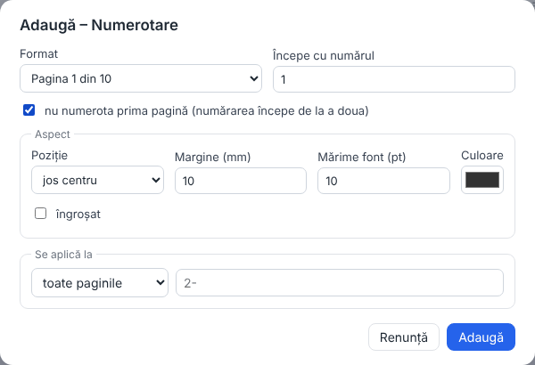
- La Format alege cum arată numărul: „1”, „1 / 10”, „Pagina 1”, „Pagina 1 din 10” sau „- 1 -”.
- La Începe cu numărul scrie primul număr (de obicei 1).
- Bifează „nu numerota prima pagină” dacă prima pagină este o copertă. Numărarea începe atunci de la a doua pagină.
- Alege poziția (de obicei „jos centru”), mărimea și culoarea.
- Apasă Adaugă.
Dacă documentul are deja o numerotare, butonul Numerotare o deschide direct pentru modificare.
16.2. Antet / subsol
Apasă Antet/subsol. Scrie textul dorit în câmpul Text. Alege o poziție de sus pentru antet sau una de jos pentru subsol.
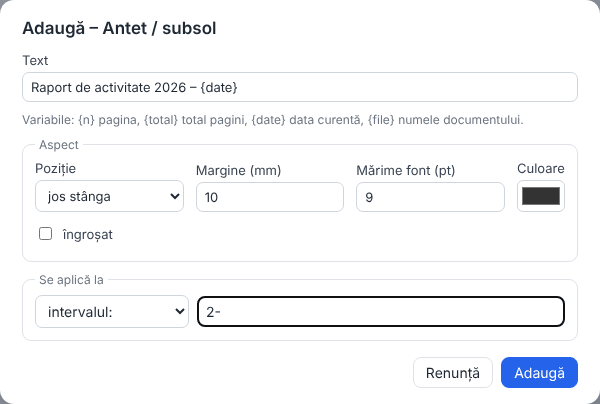
În text poți folosi variabile, care se înlocuiesc automat pe fiecare pagină:
| Scrii | Apare pe pagină |
|---|---|
{n} | numărul paginii |
{total} | numărul total de pagini |
{date} | data de azi (de exemplu 16.11.2026) |
{file} | numele documentului (cel din bara de sus) |
Exemplu: Confidențial – {file} – pagina {n} din {total}. Dacă nu găsești acoladele { } pe tastatură, copiază exemplul: selectează-l cu mouse-ul, apasă Ctrl + C, apoi dă click în câmpul Text și apasă Ctrl + V.
16.3. Watermark
Un watermark (filigran) este un text mare, transparent, pe diagonala paginii, de exemplu „CONFIDENȚIAL”, „CIORNĂ” sau „COPIE”. Apasă Watermark.
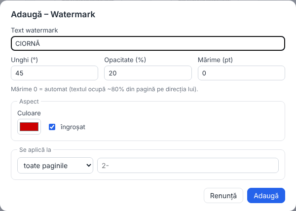
| Câmp | Ce înseamnă |
|---|---|
| Text watermark | Textul afișat. |
| Unghi (°) | Înclinarea: 45 = diagonală, 0 = orizontal, 90 = vertical. |
| Opacitate (%) | Cât de vizibil este: 100 = complet acoperitor, 20 = discret (recomandat 15–30). |
| Mărime (pt) | Lasă 0 pentru mărime automată: textul ocupă cam 80% din pagină. |
Watermark-ul se pune întotdeauna în centrul paginii.
16.4. Imagine (logo, ștampilă, semnătură scanată)
Apasă Imagine.
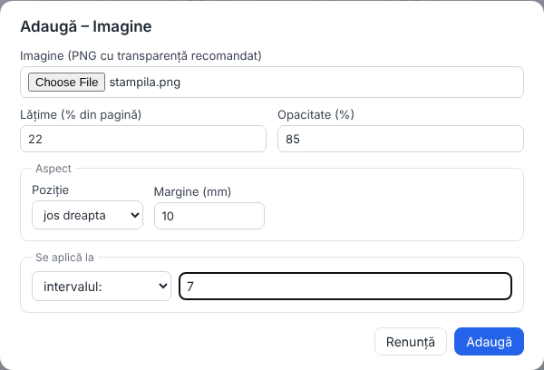
- La Imagine alege fișierul. Recomandăm o imagine PNG cu fundal transparent, ca să nu acopere textul de dedesubt cu un dreptunghi alb.
- La Lățime (% din pagină) alege cât de mare să fie (de exemplu 20 = o cincime din lățimea paginii).
- La Opacitate lasă 100 pentru o imagine complet vizibilă sau micșorează pentru un efect transparent.
- Alege poziția și paginile (de exemplu doar ultima pagină, pentru o ștampilă).
- Apasă Adaugă.
Dacă adaugi a doua oară același tip de suprapunere, fereastra îți propune să o editezi pe cea existentă (butonul Editează-l pe cel existent). Dacă vrei totuși una nouă (de exemplu un antet sus și un subsol jos), completează fereastra și apasă Adaugă.
17.Panoul Straturi
Panoul Straturi din dreapta ecranului arată toate suprapunerile documentului. Se deschide singur la prima suprapunere adăugată. Îl mai poți deschide sau închide oricând cu butonul Straturi din panglică. Bulina de pe buton arată câte straturi există.
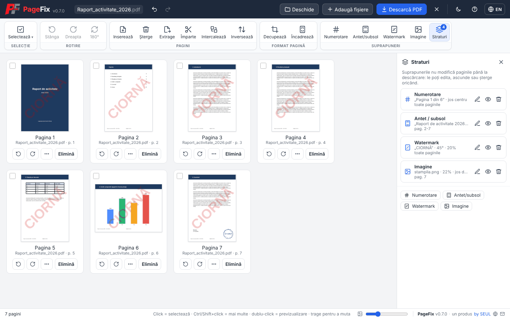
Fiecare rând din panou arată tipul stratului, un rezumat (textul, poziția) și paginile pe care se aplică. În dreapta rândului ai trei butoane:
| Buton | Ce face |
|---|---|
| Editează – redeschide fereastra stratului, ca să schimbi textul, poziția, paginile etc. Merge și cu click oriunde pe rând. În fereastra de editare găsești și butonul Șterge stratul. | |
| / | Ascunde / Arată – stratul ascuns nu apare pe pagini și nici în fișierul descărcat, dar rămâne în listă pentru mai târziu. |
| Șterge stratul (se poate anula cu Ctrl + Z). |
Butoanele din partea de jos a panoului adaugă straturi noi, la fel ca butoanele din panglică. Panoul se închide cu .
↑ Înapoi sus18.Previzualizarea unei pagini
Ca să vezi o pagină mare, dă dublu-click pe miniatura ei (sau alege „Previzualizare” din meniul ). Pagina se deschide peste tot ecranul, cu toate suprapunerile.
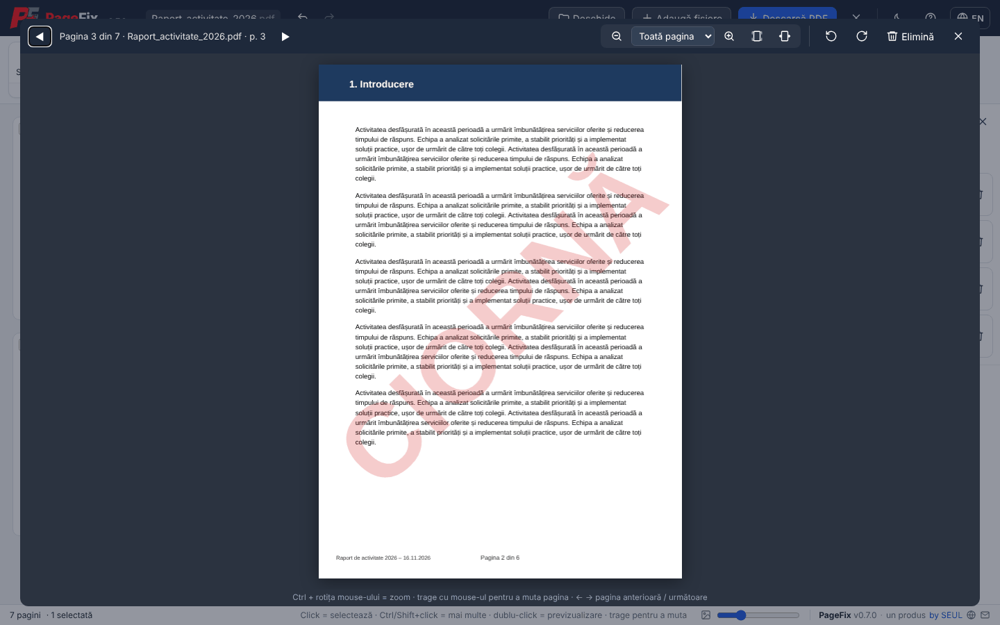
Butoanele din bara de sus a previzualizării
| Buton | Ce face |
|---|---|
| ◀ și ▶ | Pagina anterioară / următoare. |
| și | Micșorează / mărește pagina. |
| lista de zoom | Alegi direct: „Toată pagina”, „Pe lățime” sau un procent (50% … 600%). 100% înseamnă mărimea reală a paginii. |
| Toată pagina încape pe ecran. | |
| Pagina ocupă toată lățimea ecranului. | |
| și | Rotesc pagina afișată. |
| Elimină | Scoate pagina din document și trece la următoarea. |
| Închide previzualizarea (sau tasta Esc). |
Cu mouse-ul și tastatura
- Ctrl + rotița mouse-ului – mărește sau micșorează exact în punctul de sub cursor;
- dublu-click pe pagină – comută între „Toată pagina” și 200% în punctul respectiv;
- când pagina e mărită, trage cu mouse-ul ca s-o muți (ca pe o foaie pe masă);
- tastele ← → sau PageUp PageDown – pagina anterioară / următoare;
- + / - – zoom; 0 – toată pagina; W – pe lățime.
19.Anularea greșelilor
Aproape orice operație se poate anula: ștergeri, mutări, rotiri, inserări, decupări, încadrări, suprapuneri.
- din bara de sus sau Ctrl + Z – anulează ultima operație. Poți apăsa de mai multe ori, ca să te întorci mai mulți pași (până la 200).
- sau Ctrl + Y – reface operația anulată.
Butoanele sunt estompate când nu există nimic de anulat sau de refăcut.
Dacă închizi documentul, deschizi altul, schimbi limba sau închizi pagina browserului, istoricul se pierde. Descarcă rezultatul înainte.
20.Salvarea (descărcarea) rezultatului
Modificările făcute în PageFix ajung într-un fișier abia când îl descarci. Fișierul original rămâne neschimbat.
1. Alege numele fișierului
- Dă click pe numele documentului din bara de sus (lângă sigla PageFix).
- Șterge numele vechi și scrie-l pe cel nou, de exemplu „Contract semnat 2026”.
- Apasă Enter.
Nu e nevoie să scrii „.pdf”, se adaugă automat. Caracterele care nu sunt permise în numele fișierelor (\ / : * ? " < > |) se înlocuiesc cu „_”.
2. Descarcă
Apasă Descarcă PDF (sau Ctrl + S). După câteva momente apare mesajul „Salvat: …” cu numele și mărimea fișierului.
3. Unde găsesc fișierul?
- De obicei, în folderul Descărcări (Downloads) al calculatorului.
- În Google Chrome și Microsoft Edge, tastele Ctrl + J arată lista descărcărilor (în Firefox: Ctrl + Shift + Y). De acolo poți deschide direct fișierul sau folderul în care se află.
- În colțul din dreapta-sus al browserului apare de obicei și o iconiță de descărcare (o săgeată în jos); click pe ea arată ultimele fișiere descărcate.
- Dacă browserul este setat să întrebe unde se salvează fiecare fișier, va apărea fereastra de alegere a locului.
Dacă închizi fila browserului sau aplicația cu modificări nedescărcate, browserul te avertizează. Butonul (Închide documentul) cere și el confirmarea.
21.Temă, limbă și mărimea miniaturilor
Tema luminoasă / întunecată
Butonul din bara de sus trece aplicația pe tema întunecată, mai odihnitoare pentru ochi seara. În tema întunecată butonul devine și te readuce la tema luminoasă. Alegerea este ținută minte de browser. Paginile PDF rămân albe, așa cum vor arăta la tipărire.
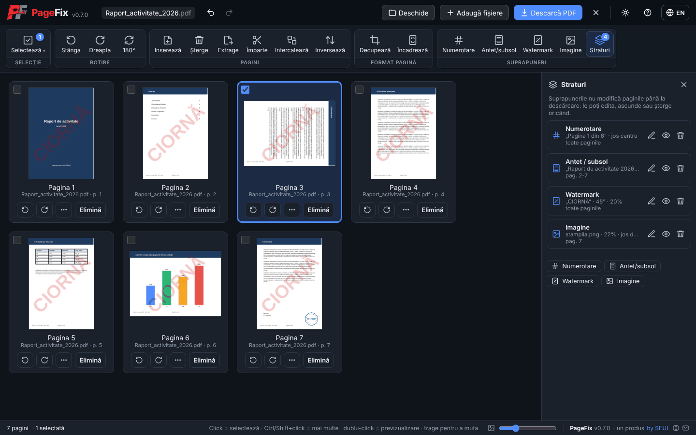
Limba
Butonul EN trece aplicația în engleză; în engleză butonul arată RO și te readuce la română.
Schimbarea limbii reîncarcă pagina, iar documentul deschis se închide. Descarcă rezultatul înainte să schimbi limba.
Mărimea miniaturilor
Glisorul din bara de stare (lângă iconița ) mărește sau micșorează miniaturile paginilor. Trage-l spre dreapta pentru pagini mai mari, ușor de citit pe un ecran mare, sau spre stânga ca să vezi mai multe pagini deodată. Și această alegere este ținută minte de browser.
↑ Înapoi sus22.Scurtături de tastatură
Pe Mac folosește tasta ⌘ (Cmd) în loc de Ctrl.
În ecranul principal
| Taste | Ce fac |
|---|---|
| F1 | Deschide manualul de utilizare (funcționează oriunde în aplicație) |
| Ctrl + S | Descarcă documentul (PDF) |
| Ctrl + Z | Anulează ultima operație |
| Ctrl + Y sau Ctrl + Shift + Z | Reface operația anulată |
| Ctrl + A | Selectează toate paginile |
| Esc | Anulează selecția / închide meniul deschis |
| Delete | Elimină paginile selectate |
| Ctrl + click, Shift + click | Selectează mai multe pagini (vezi capitolul 5) |
| dublu-click pe o pagină | Previzualizare |
În previzualizare
| Taste | Ce fac |
|---|---|
| ← →, PageUp PageDown | Pagina anterioară / următoare |
| + / - | Mărește / micșorează |
| 0 (zero) | Toată pagina |
| W | Pe lățime |
| Ctrl + rotița mouse-ului | Zoom în punctul de sub cursor |
| Alt + Home | Prima pagină |
| Esc | Închide previzualizarea |
În ferestre (dialoguri)
Esc închide fereastra fără să aplice nimic (la fel ca butonul Renunță).
↑ Înapoi sus23.Întrebări frecvente și probleme
Am apăsat „Descarcă PDF”, dar nu găsesc fișierul.
Uită-te în folderul Descărcări (Downloads) sau apasă Ctrl + J în browser (în Firefox Ctrl + Shift + Y) ca să vezi lista descărcărilor. Fișierul are numele scris în bara de sus a aplicației, cu „.pdf” la final.
Am modificat documentul, dar fișierul de pe calculator a rămas la fel.
Este normal: PageFix nu modifică niciodată fișierul original. Rezultatul este un fișier nou, creat cu Descarcă PDF. Dacă vrei să-l înlocuiești pe cel vechi, mută sau redenumește fișierele din folder.
Butoanele de rotire nu fac nimic / apare „Selectează mai întâi una sau mai multe pagini.”
Butoanele din grupul Rotire lucrează doar pe paginile selectate. Dă click pe o pagină (sau bifează-i căsuța) și încearcă din nou. Pentru o singură pagină poți folosi și butoanele de sub miniatura ei.
Apare „Deschide mai întâi un document.”
Ai apăsat un buton care are nevoie de un document deschis. Deschide mai întâi un fișier (vezi Primii pași).
Am șters, mutat sau rotit ceva din greșeală.
Apasă Ctrl + Z sau butonul din bara de sus. Repetă până ajungi la starea dorită.
Fișierul cere o parolă.
Documentul este protejat. Scrie parola primită de la cel care ți-a trimis fișierul. Fără parolă, fișierul nu poate fi deschis.
Apare „… este criptat. Vizualizarea merge, dar paginile salvate pot ieși goale sau corupte.”
Fișierul are restricții de modificare puse de emitent. Poți încerca să lucrezi cu el, dar verifică neapărat fișierul descărcat. Dacă paginile ies goale, cere o versiune fără restricții.
Apare „Interval invalid” sau „Pagina … nu există”.
Textul scris la „Pagini” nu respectă regulile sau se referă la o pagină care nu există. Recitește capitolul 6. Exemple corecte: 3, 2, 5, 4-9, 10-.
Miniaturile apar gri câteva momente.
Paginile se desenează pe rând, doar cele vizibile pe ecran (ca aplicația să rămână rapidă). La documentele mari sau scanate, desenarea poate dura puțin. Așteaptă câteva secunde.
Linkurile din document nu mai funcționează.
Ai folosit probabil Încadrarea în format, care transformă paginile și pierde linkurile. Anulează cu Ctrl + Z și folosește Decuparea, care le păstrează.
Am schimbat limba și documentul a dispărut.
Schimbarea limbii reîncarcă aplicația și închide documentul (aplicația te avertizează înainte). Redeschide fișierul. Data viitoare, descarcă rezultatul înainte să schimbi limba.
Textul din antet sau watermark nu apare.
- Verifică în panoul Straturi dacă stratul nu este ascuns (iconița ).
- Verifică la „Se aplică la” dacă pagina respectivă este inclusă.
- Verifică culoarea: un text gri închis nu se vede pe o bandă închisă la culoare. Alege altă culoare sau altă poziție.
Merge greu cu un document foarte mare.
Documentele scanate cu sute de pagini cer multă memorie. Închide celelalte file ale browserului, micșorează miniaturile cu glisorul din bara de stare sau lucrează pe bucăți (vezi Împărțirea).
Este sigur să lucrez cu documente confidențiale?
Da. Fișierele sunt prelucrate exclusiv în browserul de pe calculatorul tău și nu sunt trimise nicăieri. Fereastra „Despre” confirmă acest lucru.
Pe ecran apare „Lipsesc fișiere necesare: …”.
Instalarea aplicației este incompletă. Nu este o problemă a ta: anunță departamentul IT și trimite-le textul afișat.
24.Ce nu poate face PageFix
Ca să nu cauți degeaba, iată ce nu face aplicația:
- nu modifică textul existent din pagini (nu poți corecta un cuvânt dintr-un PDF), dar poți adăuga text nou peste pagini (antet, subsol, watermark);
- nu recunoaște textul din paginile scanate (nu face OCR), deci nu poți căuta cuvinte într-o scanare;
- nu convertește în Word, Excel sau alte formate;
- nu micșorează (nu comprimă) fișierele mari;
- nu semnează digital documentele (o imagine a semnăturii sau a ștampilei poți însă adăuga, vezi 16.4);
- nu completează formulare PDF;
- nu salvează automat lucrul neterminat: descarcă rezultatul înainte să închizi.
25.Mic dicționar
| Termen | Ce înseamnă |
|---|---|
| Un tip de fișier pentru documente, care arată la fel pe orice calculator și la tipărire. | |
| Browser | Programul cu care deschizi pagini de internet: Google Chrome, Microsoft Edge, Mozilla Firefox, Safari. |
| Miniatură | Imaginea mică a unei pagini, afișată în zona paginilor. |
| Selecție | Paginile alese (cu chenar albastru), asupra cărora se aplică următoarea operație. |
| Interval de pagini | Un șir de pagini scris prescurtat, de exemplu 2-5 (vezi capitolul 6). |
| Portret / peisaj | Orientarea paginii: în picioare (portret) sau culcată (peisaj). |
| A4, A3, A5, Letter, Legal | Mărimi standard de hârtie. A4 (210 × 297 mm) este foaia obișnuită de imprimantă; A3 e dublul ei, A5 jumătatea. Letter și Legal se folosesc în SUA. |
| mm | Milimetri – unitatea pentru margini. |
| pt (punct) | Unitatea pentru mărimea textului; un text obișnuit are 10–12 pt. |
| Antet / subsol | Text repetat sus (antet) sau jos (subsol) pe fiecare pagină. |
| Watermark (filigran) | Text mare și transparent pe pagină, de exemplu „CONFIDENȚIAL”. |
| Opacitate | Cât de „plin” se vede un element: 100% acoperitor, valori mici = transparent. |
| Suprapunere / strat | Text sau imagine pus peste pagini, care se poate edita oricând până la descărcare. |
| Decupare | Ascunderea marginilor unei pagini. |
| Încadrare | Aducerea conținutului paginii la un format standard (A4 etc.). |
| Intercalare | Îmbinarea alternativă a paginilor din două documente (față, verso, față, verso…). |
| Arhivă ZIP | Un singur fișier care conține mai multe fișiere; se „dezarhivează” ca să le obții (vezi capitolul 12). |
| Descărcări (Downloads) | Folderul în care browserul salvează fișierele descărcate. |
| Drag & drop (tragere) | Apeși pe un element, ții butonul mouse-ului apăsat, muți mouse-ul și dai drumul în locul dorit. |
26.Despre aplicație
Click pe sigla PageFix din colțul stânga-sus (sau pe „PageFix v0.7.0” din bara de stare) deschide fereastra Despre, cu versiunea aplicației, datele autorului și lista componentelor folosite.
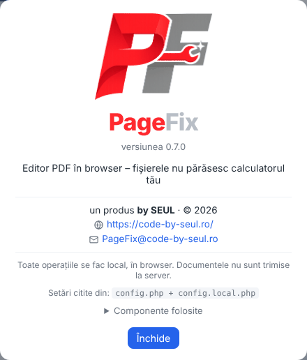
PageFix este un produs SEUL.
Site: https://code-by-seul.ro/
E-mail: PageFix@code-by-seul.ro